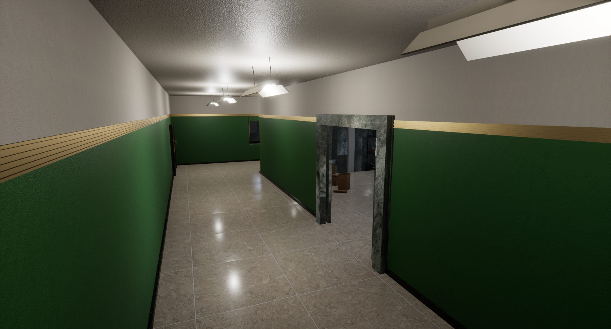
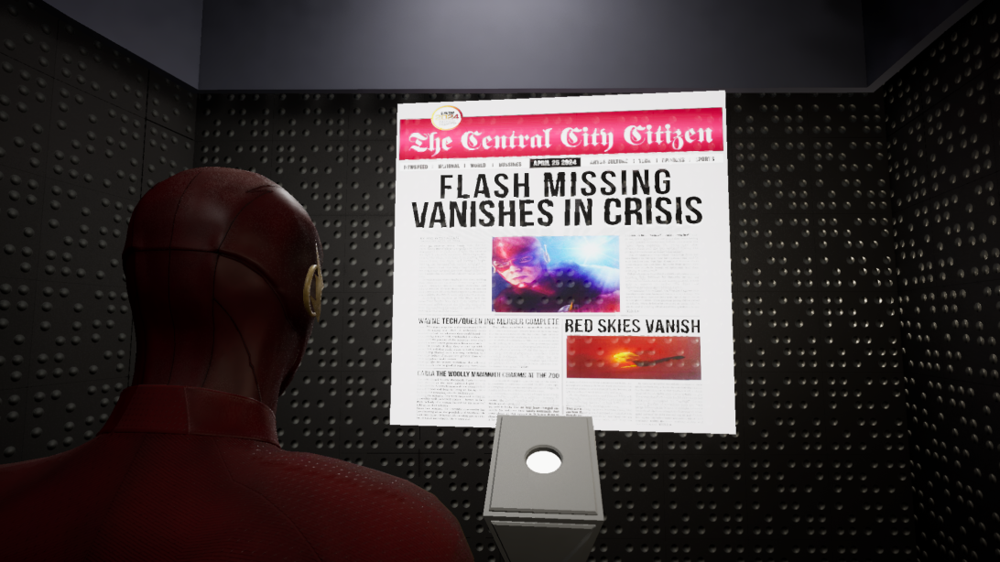
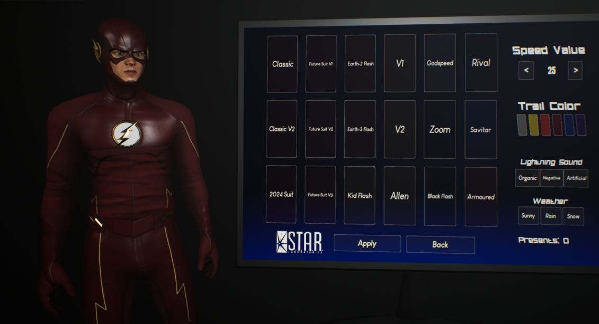
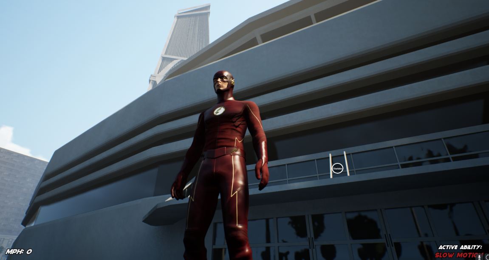
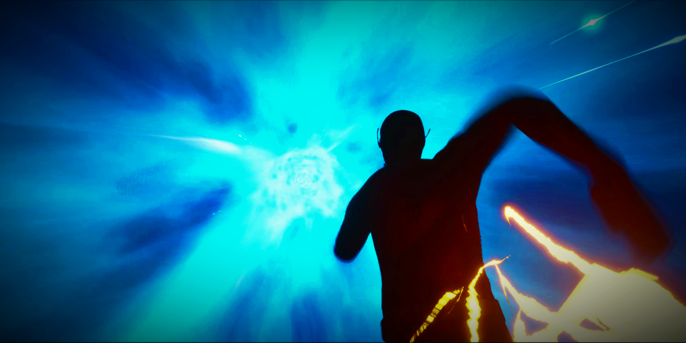

Introducing Speedster Showdown, the ultimate Flash fan game! In version 3, experience enhanced gameplay with smoother movements, new combat mechanics, and iconic interiors from the show. Battle other speedsters in the arena, customize your speed, suit, and even the time of day. Download the latest version for free and join our Discord community for support and updates. If you're a true Flash fan, this game is a must-have!
here you see ccpd this will be in the update v3. It is a beautiful building as you can see and maybe we can do missions here later. but not for now, hopefully in the future!
Speedster Showdown, is a Flash fan game, made by a die-hard Flashfan like the rest of us. And as you may know, the date '25th april, 2024' has been of significance to Barry throughout the show. As the V3 is ready, we have decided to the set release date to 25 April as a tribute to our hero, The Scarlet Speedster
Speedster Showdown V3: Dive into iconic suits, lightning trails, and customizable gameplay. Pine, the developer, values fan input for an immersive experience. Adjust time, speed, and battle in the ultimate Flash fan game!.
Here you see photo mode, with which you can take the most beautiful photos.
you can change the lighting with it. you can change not only the lighting
but also the view and distance.
this will be a good update in v3.
The game, as promised by the dev will have all the main locations from the show, like STAR Labs, CCPD, Jitters, and more with interiors. You can go inside the buildings, and recreate your favourite scenes from the show. There are alot more sneak peaks on Pine's patreon, so follow for more updates
here you can see that the flash is in the speedforce this is also an update in v3 and you have to go to star labs to be able to do this!
